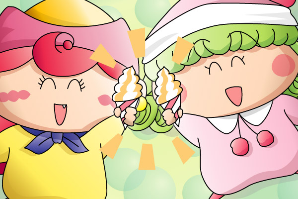

アクミ「キャラメルソフトは最高だろ！」
リルム「とってもおいしいですわ！！」
アニメ１０１話（「世界を救うメロディー」）を観た直後に、アクミが元の姿に戻った記念に描きました。”わんだほう”でリルムなどレギュラーキャラと親しい関係になってくれればなぁと描いた当時は思っていたのですが、、、はい、アクミさんは”わんだほう”を待たずしてドイツへ旅立ってしまいました(^^;。旅立ちのシーン、別れを惜しむかのように飛行機の窓から手を振っていた彼女の笑顔が忘れられません。達者で暮らせよ～～。
アクミのチャームポイントの１つとして、八重歯がありますよね。姿が元通りになったと同時に八重歯もなくなったものかと思っていたら、そうではなかったようで。さらにDVDで７７話（「ダアクがよみがえる時」）を観たら、ダアクの手下になる前から八重歯がありました！！ということで、描き忘れていた八重歯をあわてて付け足したのでした。（掲示板に貼った絵には八重歯がないです）
(2004/4/2)